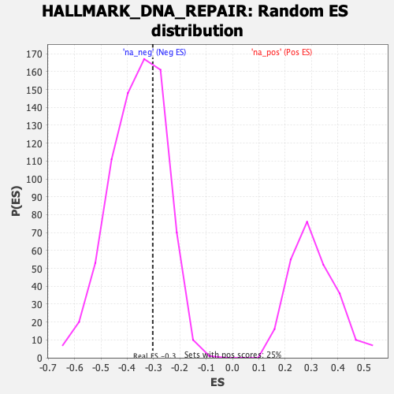

| | | Dataset | gsea_amp_ratios |
| Phenotype | NoPhenotypeAvailable |
| Upregulated in class | na_neg |
| GeneSet | HALLMARK_DNA_REPAIR |
| Enrichment Score (ES) | -0.30311266 |
| Normalized Enrichment Score (NES) | -0.8387855 |
| Nominal p-value | 0.68315506 |
| FDR q-value | 1.0 |
| FWER p-Value | 1.0 |
Table: GSEA Results Summary
 Fig 1: Enrichment plot: HALLMARK_DNA_REPAIR
Fig 1: Enrichment plot: HALLMARK_DNA_REPAIR
Profile of the Running ES Score & Positions of GeneSet Members on the Rank Ordered List
| SYMBOL | RANK IN GENE LIST | RANK METRIC SCORE | RUNNING ES | CORE ENRICHMENT | | 1 | SDCBP | 93 | 1.469 | 0.0533 | No |
| 2 | PDE4B | 327 | 0.596 | -0.0261 | No |
| 3 | HCLS1 | 392 | 0.462 | -0.0273 | No |
| 4 | HPRT1 | 742 | -0.193 | -0.1947 | No |
| 5 | PNP | 893 | -0.353 | -0.2480 | No |
| 6 | POLR1C | 970 | -0.445 | -0.2566 | No |
| 7 | POLR1H | 1056 | -0.532 | -0.2639 | Yes |
| 8 | POLR2D | 1095 | -0.569 | -0.2442 | Yes |
| 9 | NCBP2 | 1114 | -0.587 | -0.2130 | Yes |
| 10 | CANT1 | 1289 | -0.769 | -0.2499 | Yes |
| 11 | POLB | 1365 | -0.866 | -0.2290 | Yes |
| 12 | NME1 | 1432 | -0.949 | -0.1976 | Yes |
| 13 | SAC3D1 | 1622 | -1.218 | -0.2113 | Yes |
| 14 | TP53 | 1629 | -1.234 | -0.1291 | Yes |
| 15 | POLH | 1635 | -1.265 | -0.0443 | Yes |
| 16 | IMPDH2 | 1662 | -1.316 | 0.0332 | Yes |
| 17 | RPA2 | 1775 | -1.649 | 0.0891 | Yes |
Table: GSEA details [plain text format]

Fig 2: HALLMARK_DNA_REPAIR: Random ES distribution
Gene set null distribution of ES for HALLMARK_DNA_REPAIR